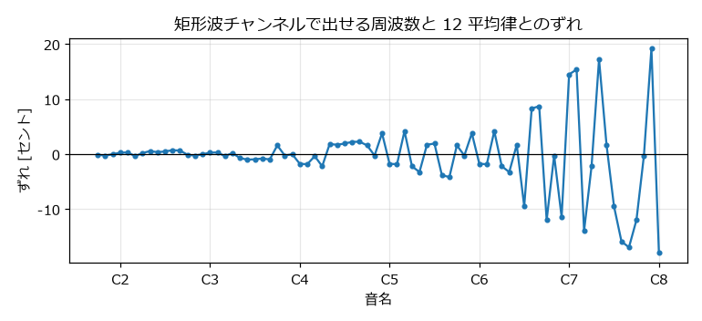
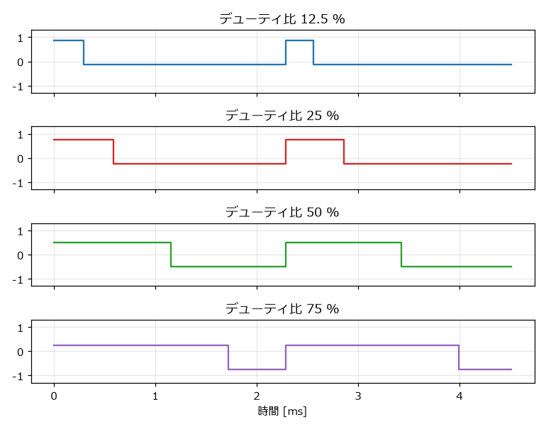
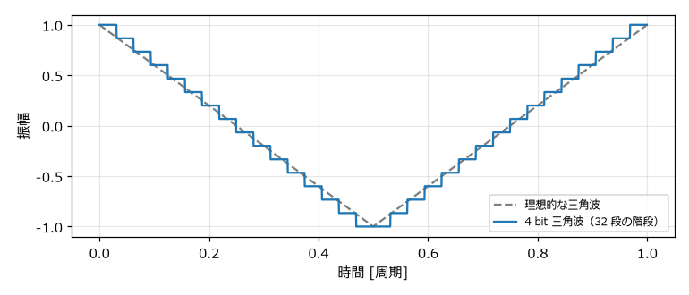

5. 音源チップの仕組み
この章では、本書が手本とするファミコンの音源の仕組みを説明する。どのような部品が、どのような制約のもとで音を作っていたのかを知ると、8 bit サウンドらしい音を作るために何を再現すればよいかがわかる。
5.1. APU の全体像
ファミコンの CPU（NTSC 版は RP2A03、以下 2A03）には、音を作る回路が内蔵されている。この回路を APU（Audio Processing Unit）という。APU は次の 5 つのチャンネルを持ち、それぞれが独立して音を出す。
チャンネル |
波形 |
主な用途 |
|---|---|---|
矩形波 1 |
矩形波（デューティ比 4 種類） |
メロディ、効果音 |
矩形波 2 |
矩形波（デューティ比 4 種類） |
ハーモニー、伴奏、効果音 |
三角波 |
4 bit の三角波 |
ベース |
ノイズ |
疑似乱数によるノイズ |
打楽器、爆発音などの効果音 |
DPCM |
1 bit の差分で表した録音データ |
打楽器、短い音声 |
CPU は、APU のレジスタ（アドレス $4000 から $4017 の範囲に割り当てられた設定値の置き場所。この範囲には APU 以外のレジスタも一部含まれる）に値を書き込んで音を制御する。各チャンネルの出力はミキサーで 1 つにまとめられ、スピーカーへ送られる。
図 5.1 APU の構成
フレームカウンターは、エンベロープ（音量の時間変化）やスイープ（音程の時間変化）などを更新するための時計である。NTSC 版では、エンベロープを約 240 Hz、スイープと音の長さのカウンターを約 120 Hz で更新する。
例えば、矩形波 1 のレジスタは次の 4 バイトである。
アドレス |
ビットの割り当て |
内容 |
|---|---|---|
|
|
D: デューティ比、L: 音の長さのカウンターの停止（エンベロープのループ）、C: 音量固定、V: 音量またはエンベロープの速さ |
|
|
スイープの設定（E: 有効、P: 周期、N: 上げるか下げるか、S: 変化量） |
|
|
タイマー値の下位 8 bit |
|
|
音の長さ（L）とタイマー値の上位 3 bit |
音を 1 つ鳴らすのに必要な情報は、たった 4 バイトである。「8 bit サウンドとは」で述べたように、CPU は波形そのものではなく、こうした少量の設定値だけを扱う。
5.2. タイマーと周波数
APU は、CPU のクロック（NTSC 版では \(f_{\mathrm{CPU}} = 1789773\) Hz）をタイマーで分周して音の周波数を作る。タイマーは、設定された値から 0 まで数え下げるたびに波形を 1 段階進める仕組みである。
矩形波チャンネルは 11 bit のタイマー値 \(t\)（0 から 2047）を持つ。波形は 8 段階で 1 周期となり、タイマーは CPU クロック 2 回に 1 回の割合で数え下げる。そのため、周波数は次の式で決まる。
例えば A4（440 Hz）を鳴らしたい場合、\(t = 1789773 / (16 \times 440) - 1 \approx 253.2\) なので、整数に丸めた \(t = 253\) を設定する。このとき実際に出る周波数は約 440.4 Hz であり、12 平均律の 440 Hz とはわずかに異なる。
タイマー値は整数なので、出せる周波数はとびとびの値に限られる。\(t\) が小さい（音が高い）ほど、\(t\) が 1 違うときの周波数の差が大きくなるため、高い音ほど音程のずれが大きくなる。図 5.2 に、各音名を鳴らしたときのずれをセントで示す。A6 付近からずれが 10 セントを超える音が現れ、C7 より上ではそれが大半になる。極端に高い音をメロディに使うときは、このずれに注意が必要である。


図 5.2 矩形波チャンネルで出せる周波数と 12 平均律とのずれ
なお、矩形波チャンネルは \(t\) が 8 未満になると音が止まる。そのため、出せる周波数はおよそ 54.6 Hz から 12.4 kHz の範囲である。各音名に対応するタイマー値は「音名と周波数の対応表」に掲載している。
5.3. 矩形波チャンネル
5.3.1. デューティ比
矩形波チャンネルの波形は、高い値と低い値の 2 つだけからなる。1 周期のうち高い値になっている時間の割合をデューティ比という。ファミコンの矩形波チャンネルは、12.5 %、25 %、50 %、75 % の 4 種類のデューティ比を選べる。


図 5.3 デューティ比の比較
デューティ比が 50 % の矩形波を特に「矩形波」、それ以外を「パルス波」と呼び分けることもある。本書では、デューティ比にかかわらずまとめて矩形波と呼ぶ。
デューティ比が変わると、含まれる倍音の割合が変わり、音色が変わる。デューティ比 \(d\) の矩形波に含まれる第 \(n\) 倍音の振幅は、次の式に比例する。
\(d = 0.5\) のときは偶数倍音が 0 になり、奇数倍音だけが残る。\(d = 0.25\) では 4 の倍数の倍音が、\(d = 0.125\) では 8 の倍数の倍音が 0 になる。デューティ比が小さいほど高い倍音の割合が増え、細く鋭い音になる。
デューティ比 12.5 %
デューティ比 25 %
デューティ比 50 %
デューティ比 75 % の波形は、25 % の波形の上下を反転させたものである。上下の反転は耳では区別できないため、75 % と 25 % は同じ音色に聞こえる。
5.3.2. 音量とエンベロープ
矩形波チャンネルの音量は 4 bit、つまり 0 から 15 の 16 段階である。音量は次の 2 つの方法で決められる。
音量固定: レジスタに書いた値（0 から 15）をそのまま音量にする。
エンベロープ: 音量を 15 から始めて、一定の間隔で 1 ずつ下げ、0 で止める（またはループさせる）。
エンベロープの間隔は、フレームカウンターの約 240 Hz のクロックを \(V + 1\) 回数えるごとに 1 段階である（\(V\) はレジスタに書いた 0 から 15 の値）。\(V = 0\) なら約 1/16 秒で、\(V = 15\) なら約 1 秒で音が消える。この自動で減衰する音量は、ピアノのように「鳴らした瞬間が最も大きく、だんだん小さくなる」音を作るのに使う。
実際のゲームでは、音楽を再生するプログラムが一定の間隔で音量を書き換えて、より細かな音量変化を作ることが多い。この仕組みは、この章の「サウンドドライバとフレーム」で説明する。
5.3.3. スイープ
スイープは、タイマー値を一定の間隔で自動的に増減させて、音程を連続的に変化させる機能である。音程が素早く上がる、または下がる効果音を、CPU の処理なしで作れる。
5.4. 三角波チャンネル
三角波チャンネルは、0 から 15 の 16 段階の値を 15、14、…、0、0、1、…、15 の順に出力して三角波を作る。1 周期は 32 段階であり、周波数は次の式で決まる。
同じタイマー値なら、矩形波チャンネルより 1 オクターブ低い音になる。図 5.4 のように、波形は滑らかな三角波ではなく 32 段の階段になっている。


図 5.4 4 bit の三角波と理想的な三角波
三角波チャンネルの最大の特徴は、音量を変えられないことである。鳴らすか止めるかしか選べないため、だんだん小さくなる音は作れない。三角波は倍音が少なくやわらかい音なので、主にベースに使われる。
三角波（440 Hz）
5.5. ノイズチャンネル
5.5.1. 線形帰還シフトレジスタ
ノイズチャンネルは、15 bit の線形帰還シフトレジスタ（LFSR: Linear Feedback Shift Register）で疑似乱数を作り、その最下位ビットに応じて音を出す。LFSR はタイマーで決まる間隔ごとに次の手順で更新される。
bit 0 と bit 1 の排他的論理和（XOR）を計算する。
レジスタ全体を 1 bit 右へずらす。
手順 1 の結果を最上位の bit 14 に入れる。
出力は bit 0 が 0 のときに音量の値、1 のときに 0 になる。
図 5.5 LFSR の動作（通常モード）
LFSR の値は、32767 回の更新で一巡して元に戻る。規則的に計算しているが、一巡するまでの並びは乱数のように見えるため、ザーという雑音に聞こえる。
5.5.2. 短周期モード
ノイズチャンネルには、XOR をとる位置を bit 1 から bit 6 に変える短周期モードがある。このモードでは LFSR が 93 回（初期値によっては 31 回）の更新で一巡するため、雑音の中に一定の高さの音が混ざった、金属的な音になる。
ノイズ（通常モード）
ノイズ（短周期モード）
5.5.3. ノイズの周期
LFSR を更新する間隔は、16 種類の中から選ぶ。本書では、この 0 から 15 の番号を周期インデックスと呼ぶ。間隔が短いほど高い成分を多く含む「シャー」という音に、長いほど低い「ゴー」という音になる。
周期インデックス |
0 |
1 |
2 |
3 |
4 |
5 |
6 |
7 |
|---|---|---|---|---|---|---|---|---|
CPU クロック数 |
4 |
8 |
16 |
32 |
64 |
96 |
128 |
160 |
周期インデックス |
8 |
9 |
10 |
11 |
12 |
13 |
14 |
15 |
CPU クロック数 |
202 |
254 |
380 |
508 |
762 |
1016 |
2034 |
4068 |
次の音は、周期インデックスを 0 から 15 まで 0.25 秒ずつ順に変えたものである。
ノイズの周期の変化（周期インデックス 0 から 15）
ノイズチャンネルの音量の仕組みは、矩形波チャンネルと同じ（16 段階、エンベロープあり）である。
5.6. DPCM チャンネル
DPCM チャンネルは、カートリッジに保存した録音データを再生するチャンネルである。データは 1 サンプルあたり 1 bit で、「前の値から少し上げる」か「少し下げる」かだけを記録する（デルタ変調）。出力値は 7 bit（0 から 127）のカウンターで保持される。
1 bit で記録するのでデータ量は少ないが、それでも容量の限られたカートリッジでは長い音を入れられない。そのため、主にドラムの音や短い掛け声に使われた。本書では、録音データを使わずに音を作ることに集中するため、DPCM チャンネルは扱わない。
5.7. ミキサー
APU のミキサーは、各チャンネルの出力を単純に足し合わせるのではなく、非線形な式でまとめる。NESdev Wiki に掲載されている近似式は次のとおりである（各チャンネルの値は、矩形波・三角波・ノイズが 0 から 15、DPCM が 0 から 127）。
最終的な出力は \(\mathrm{pulse\_out} + \mathrm{tnd\_out}\) である。この式から、2 つの矩形波を同時に最大音量で鳴らしても、出力は 1 つのときの 2 倍にはならないことがわかる。本書のサンプルコードでは、わかりやすさを優先して、各チャンネルに係数を掛けて足し合わせる単純な方法を使う。
5.8. サウンドドライバとフレーム
ゲームの音楽は、CPU 上で動くサウンドドライバが再生する。サウンドドライバは、画面の更新と同じく 1 フレーム（NTSC 版では約 1/60 秒）に 1 回呼び出され、楽譜のデータを読んで APU のレジスタを書き換える。
そのため、音量や音程の変化、音の長さは、基本的に 1/60 秒単位で刻まれる。ビブラートやアルペジオも、このフレーム単位で音程を書き換えて作られる。本書のサンプルコードでも、アルペジオなどの切り替え間隔の既定値を 1/60 秒にしている。
5.9. 他の音源との比較
「8 bit サウンドとは」で紹介した他の音源と、ファミコンの音源を比較する。
項目 |
ファミコン（APU） |
ゲームボーイ |
AY-3-8910 |
SN76489 |
|---|---|---|---|---|
矩形波 |
2 チャンネル。デューティ比 4 種類 |
2 チャンネル。デューティ比 4 種類。1 チャンネルはスイープ付き |
3 チャンネル。デューティ比 50 % のみ |
3 チャンネル。デューティ比 50 % のみ |
その他の波形 |
三角波 1、DPCM 1 |
波形メモリ 1（4 bit × 32 サンプルの波形を自由に設定） |
なし |
なし |
ノイズ |
1 チャンネル。LFSR（15 bit） |
1 チャンネル。LFSR（15 bit または 7 bit） |
ノイズ発生器 1 つを各チャンネルに混ぜる |
1 チャンネル |
音量 |
16 段階。三角波は変更不可 |
16 段階（波形メモリは 4 段階） |
16 段階（対数的な段階）。共通のハードウェアエンベロープあり |
16 段階（2 dB 刻みの減衰量） |
出力 |
モノラル |
ステレオ（チャンネルごとに左右を選択） |
モノラル（チャンネルごとに出力端子あり） |
モノラル |
どの音源も、矩形波とノイズを中心に、16 段階の音量で音を作るという点は共通している。本書で学ぶ考え方は、ファミコン以外の音源の音を作るときにも役立つ。
5.10. 再現する特徴のまとめ
本書のサンプルコードでは、ファミコンの音源の次の特徴を再現する。
矩形波（デューティ比 12.5 %、25 %、50 %、75 %）、4 bit の三角波、LFSR によるノイズ（通常モードと短周期モード）を使う。
矩形波とノイズの音量は 16 段階に丸める。三角波の音量は変えない。
1 チャンネルは同時に 1 つの音しか出せない。
アルペジオやデューティ比の切り替えは、サウンドドライバと同じく 1/60 秒単位で行う（スイープやビブラートは、サンプル単位で滑らかに変化させる）。
一方、次の点は再現しない。
DPCM チャンネル
ミキサーの非線形性
タイマー値による音程のずれ（BGM の作例では 12 平均律の周波数をそのまま使う）
ファミコン本体のアナログ回路によるフィルターの効果
これらを再現しなくても、8 bit サウンドらしさを決める要素は十分に表現できる。次の章から、実際にプログラムで音を作っていく。